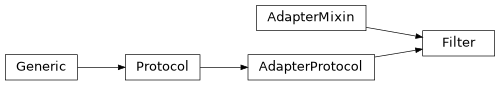

indicative.adapters#
Classes#
Select adapter. |
|
Transform adapter. |
|
Filter adapter. |
|
Selects the first n elements from a sequence. |
|
Selects the last n elements from a sequence. |
|
Selects an attribute from each element in a sequence. |
|
Computes the mean of a sequence of numbers. |
|
Reverses the order of the elements in a sequence. |
|
Sorts the elements in a sequence. |
Module Contents#
- class indicative.adapters.Select[source]#
Bases:
indicative.protocols.AdapterProtocol,indicative.mixins.AdapterMixinSelect adapter.
Select adapter calls the provided function with the input sequence and returns the result.
- Parameters:
func – A callable that takes a sequence and returns a value.
- Returns:
The result of calling the provided function with the input sequence.
Example
>>> adapter = Select(lambda x: x[0]) >>> [1, 2, 3] | adapter 1
- class indicative.adapters.Transform[source]#
Bases:
indicative.protocols.AdapterProtocol,indicative.mixins.AdapterMixinTransform adapter.
The Transform adapter applies the provided function to each element in the input sequence and returns the result.
- Parameters:
func – A callable that takes a single element and returns a value.
- Returns:
The result of calling the provided function with each element in the input sequence.
Example
>>> adapter = Transform(lambda x: x**2) >>> [1, 2, 3] | adapter [1, 4, 9]
- class indicative.adapters.Filter[source]#
Bases:
indicative.protocols.AdapterProtocol,indicative.mixins.AdapterMixinFilter adapter.
The Filter adapter applies the provided function to each element in the input sequence and returns the result.
- Parameters:
func – A callable that takes a single element and returns a boolean.
- Returns:
The list of elements in the input sequence for which the provided function returns True.
Example
>>> adapter = Filter(lambda x: x > 0) >>> [1, -2, 3] | adapter [1, 3]
- class indicative.adapters.Head[source]#
Bases:
indicative.mixins.SelectMixin[T]Selects the first n elements from a sequence.
- class indicative.adapters.Tail[source]#
Bases:
indicative.mixins.SelectMixin[T]Selects the last n elements from a sequence.
- class indicative.adapters.Attr[source]#
Bases:
indicative.mixins.SelectMixin[T]Selects an attribute from each element in a sequence.
This adapter uses the specified attribute name to extract the attribute’s value from each element in the input sequence.
- class indicative.adapters.Mean[source]#
Bases:
indicative.mixins.SelectMixin[T]Computes the mean of a sequence of numbers.
This adapter takes a sequence of numbers as input and returns the mean of the sequence.
Examples
>>> [1, 2, 3, 4, 5] | Mean() 3.0
- class indicative.adapters.Reverse[source]#
Bases:
indicative.mixins.SelectMixin[T]Reverses the order of the elements in a sequence.
This adapter takes a sequence as input and returns a new sequence with the elements in reverse order.
Examples
>>> [1, 2, 3, 4, 5] | Reverse() [5, 4, 3, 2, 1]
- class indicative.adapters.Sort[source]#
Bases:
indicative.mixins.SelectMixin[T]
Sorts the elements in a sequence.
This adapter sorts the elements in the input sequence in ascending or descending order based on the reverse attribute.